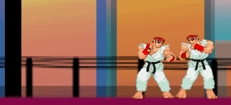
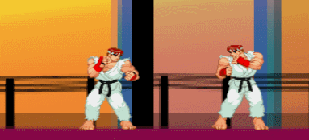
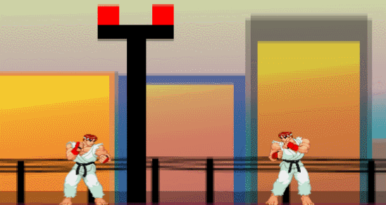

Como Jogar
Ao contrário da maioria dos jogos de luta, Jooj: The Game™ apresenta um sistema simples e intuitivo.
A complexidade da maioria dos jogos de luta afasta, na maioria das vezes, os novatos os quais desejam entrar nesse mundo dentre socos e pontapés.
Jooj: The Game™ é melhor jogado num teclado padrão de 104 teclas, uma vez que o numpad é utilizado para o Player 1.
Golpes
Soco
| Player 1 | Player 2 |
|---|---|
| * | U |
Seu golpe de menor dano, porém, de maior alcance (excluindo a fireball). Tem maior "knockback" (adversário é "empurrado para trás").
Por esse motivo, é a melhor forma de se retaliar contra ataques aéreos.
Fireball (Magia)
| Player 1 | Player 2 |
|---|---|
| + | O |
Conhecida como "magia" no Brasil, é sua principal ferramenta para realizar o zoning (controle de espaço), tem dano mediano.
Chute
| Player 1 | Player 2 |
|---|---|
| - | I |

Dano alto, balanceado pelo curto alcance e o fato de não acertar oponentes aéreos a menos que esteja no ar, use com cautela.
Defesa
| Player 1 | Player 2 |
|---|---|
| ↓ | S |
Defender é importante! Todo jogo de luta apresenta algo chamado de "recovery", onde após errar um golpe, ou ser defendido, o personagem tem um tempo para se "recuperar".
Essa é a hora de punir o erro de seu adversário.
Movimentação
Pulo
| Player 1 | Player 2 |
|---|---|
| ↑, ↑+←, ↑+→ | W, W+A, W+D |
Utilize "↑" ou "W" para o pulo neutro ou qualquer outra combinação para pular na direção escolhida. O pulo é a melhor ferramenta para percorrer o maior espaço em menos tempo, porém, você pode ficar aberto para reversais de seu adversário.
É mais comumente usado para atacar no ar um jogador que esteja no chão, os chamados "jump-ins".
Andar
| Player 1 | Player 2 |
|---|---|
| ←, → | A, D |
Simples, saudável e direto. Pode ser cancelado na defesa. Sua caminhada de costas é mais lenta do que quando encara seu adversário.
Algumas técnicas
Combo
Utilize-se da vantagem do chute não ter "knockback", um combo simples, porém efetivo consiste de chute, soco e magia.
Punição
Seu oponente está vulnerável depois de errar um golpe. Acerte-o com a melhor opção!

Decisão da vitória
O jogo funciona no sistema "melhor de três", ou seja, 2 rounds são necessários para garatir uma vitória, indo para o 3 em caso de empate.
Double KO's são raros, mas acontecem, são eles que garantem empates. Eles, ou a mesma quantidade de vida (Medida pela barra acima dos jogadores).